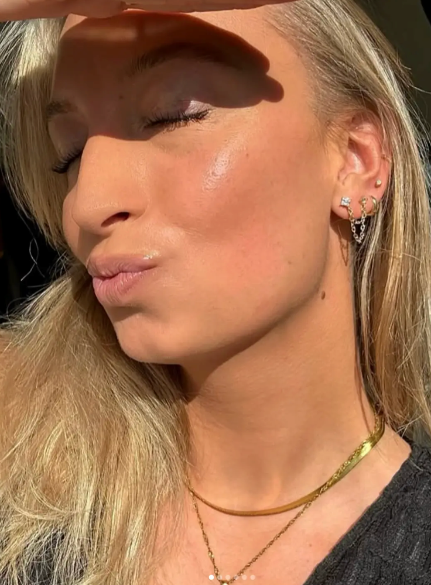
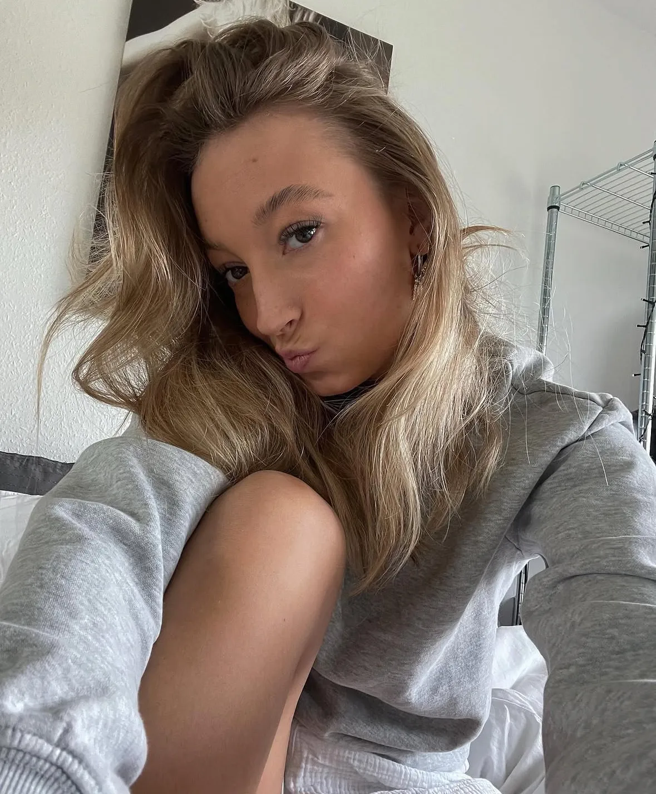
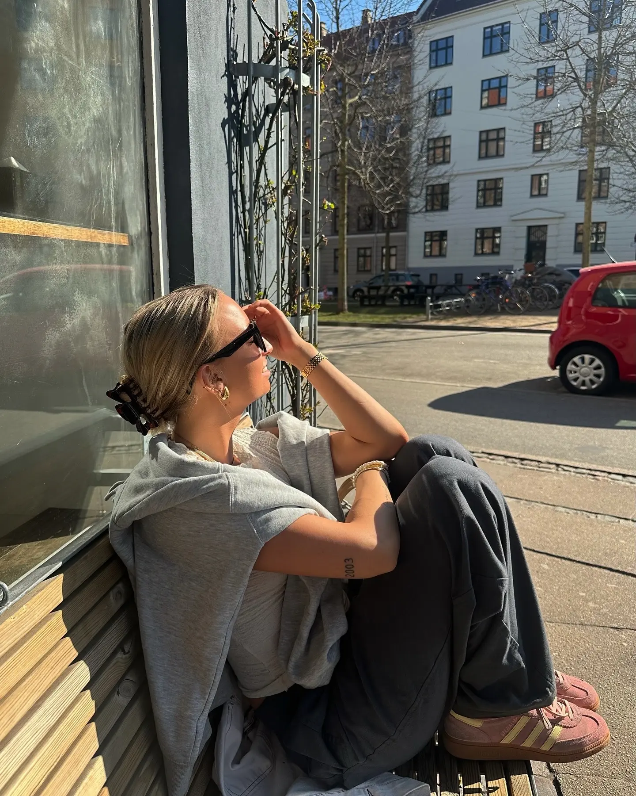
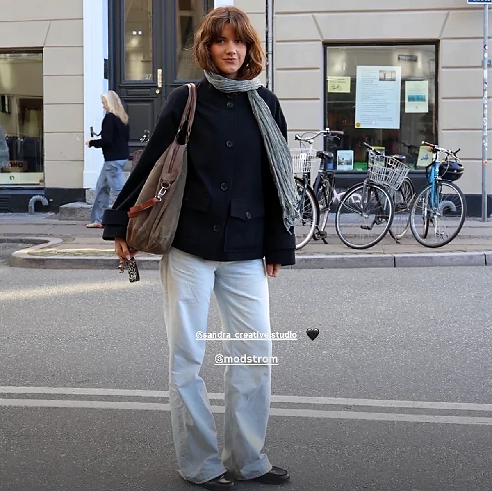
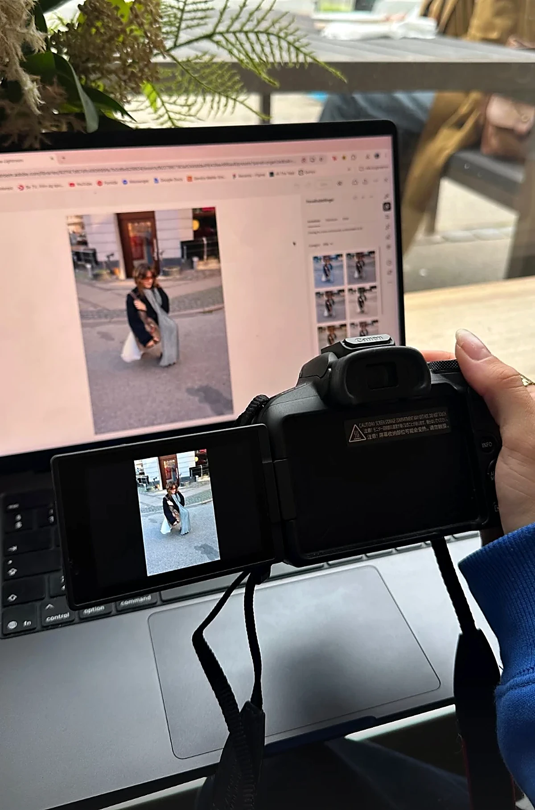
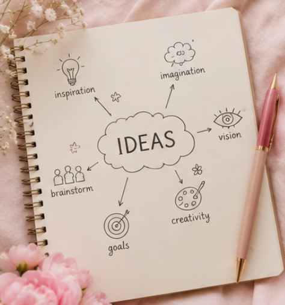
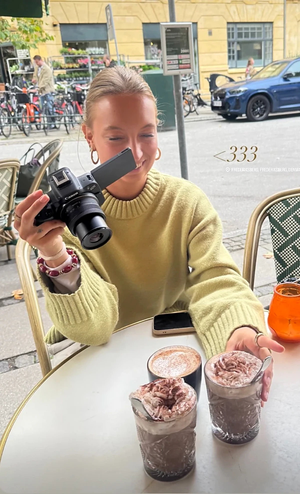

───OM MIG ───
Lidt om personen bag
Jeg elsker det visuelle og har altid haft øje for de små detaljer. Det er tit dem, der gør, at noget bare føles rigtigt. Jeg kan godt bruge lang tid på at flytte rundt på en farve, en skrifttype eller et billede, indtil det hele spiller sammen. Jeg vil gerne lave indhold, der er smukt og giver mening, og som folk faktisk kan mærke noget ved. For mig er det dér, design bliver sjovt.

DET HER ER MIG
MERE UDDYBENDE
Jeg er en imødekommende og ansvarsbevidst person med en stor nysgerrighed på verden
omkring mig. De
seneste år har jeg
brugt på at rejse, opleve nye kulturer og udfordre mig selv gennem forskellige oplevelser rundt
omkring i verden.
Rejserne har givet mig et bredere perspektiv, styrket min selvstændighed og lært mig værdien af at
være åben, kreativ og
tilpasningsdygtig i nye situationer.
Til dagligt læser jeg multimediedesign på KEA, hvor jeg arbejder med kreativt design, digitale
løsninger og
brugeroplevelser.
Jeg brænder for at kombinere æstetik og funktionalitet og skabe visuelle
løsninger, der både ser godt
ud og giver mening for brugeren.
Ved siden af studiet arbejder jeg hos Espresso House,
hvor jeg
udvikler mine evner
inden for kundekontakt, samarbejde og ansvar i en travl hverdag.


FRA KREATIV TANKE
TIL GENNEMTÆNKT
DESIGN
Kreativitet er for mig mere end inspiration – det er en proces. Jeg motiveres af at udforske idéer, stille spørgsmål og finde løsninger, der både er visuelt stærke og skabt med brugeren i fokus.
Fra den første tanke til det færdige design arbejder jeg med en nysgerrig og undersøgende tilgang, hvor hver detalje har en funktion og et formål. Det er netop i denne proces, jeg finder størst motivation. At se en idé udvikle sig gennem research, skitser, design og test til en færdig løsning er det, der driver mig. Jeg tror på, at de bedste digitale oplevelser opstår, når kreativitet kombineres med struktur, empati og et ønske om at skabe noget, der gør en reel forskel.


Kontakt mig her


DERFOR SKAL DU
VÆLGE MIG
Jeg møder nye opgaver med engagement, nysgerrighed og en positiv indstilling.
Jeg trives både med
selvstændigt ansvar og
i samarbejde med andre, hvor forskellige idéer og perspektiver kan føre til stærkere løsninger.
Som kommende multimediedesigner ønsker jeg at udvikle mig i et miljø, hvor jeg kan bidrage med mine
kompetencer,
samtidig med at jeg
lærer af erfarne kolleger.
Jeg er motiveret for
at skabe digitale løsninger, der gør en forskel,
og
ser hver ny opgave
som en mulighed for at vokse både fagligt og personligt